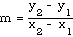

<HTML>
<HEAD>
<TITLE>4.4 Predicates</TITLE>
<meta NAME="keywords" CONTENT="predicates, prediate, precondition, preconditions, postcondition, postconditions, documentation, comments, programmer, prigram, max, abs">
<meta NAME="description" CONENT="Modula-2 shareware textbook by Rick Sutcliffe: Program Orginization and Procedures">
<META NAME="Author" content="Rick Sutcliffe">
<META NAME="Copyright" content="1983-2004 Rick Sutcliffe">
<STYLE TYPE="text/css"></STYLE>
<LINK REL ="stylesheet" TYPE="text/css" HREF="../linkstyles.css" TITLE="Style">
<LINK REL ="stylesheet" TYPE="text/css" HREF="../stylesheet.css" TITLE="Style">

</HEAD>

<BODY BGCOLOR="#CCFFFF">
<SCRIPT LANGUAGE="JavaScript1.1">
<!--
function framesGO() {
// figures out the path to one directory above this document
// (where the MAIN index.html is) and puts it into theString:

theString=document.URL
theString=theString.substring(0,theString.lastIndexOf("/",theString.length - 14))
parent.window.location = theString + "/index.html?" + document.URL
}

// if this is the top frame, we'll create a link to activate some
// JavaScript to set up the frames around this document.  For more
// documentation, look at the comments in the source of the top frame
// (numberstr.html in this directory - not numberstr1.html).

if ((parent.frames.length) == 0)
{
document.write('<CENTER><A HREF=\"javascript:framesGO()\">Show outer (navigation) frames</A></CENTER><HR>')
}
else
{
if (navigator.appVersion.substring(0,1) == 3 && navigator.appName.lastIndexOf('Netscape') != -1)
{
parent.frames[0].location.replace('numberstr1.html')
// For some reason netscape 3 gets confused when it tries to run the cool JavaScript
// stuff in numberstr.html and continue to load this frame at the same time. >:-(
// So, we'll load the boring numberstr1.html instead.
}
else
{
parent.frames[0].location.replace('numberstr.html')
}
}
//-->
</SCRIPT>
<H2><B>4.4 Predicates</B></H2>
<P>To this point, little regard has been paid to the documentation of procedures.  Comments have been included where appropriate, but nothing has been said about any special need to document the role and function of procedures.  This needs attention, for procedures are not just portions of a program, or miniature programs on their own, but are pieces of re-usable code that may be called upon under a variety of circumstances.  It is important therefore, that each procedure be clearly documented as to:</P>
<UL><!--€--><LI> its purpose</LI>
<LI><!--€--> any assumptions it makes about the data passed to it (<I>preconditions</I>)</LI>
<LI><!--€--> the nature of any data produced by it (<I>postconditions</I>)</LI></UL>
<P>Such documentation will allow the programmer to avoid errors caused by using a poorly remembered piece of code for some purpose for which it was never intended; the proper use will be outlined in comments that remain with the code.  Consider, for instance, a procedure designed to compute what percentage one number is of another:</P>
<PRE>
  <B>PROCEDURE</B> Percent (num, denom : <B>REAL</B>; <B>VAR</B> result : <B>REAL</B>);

  <B>BEGIN</B>
    result := 100.0 * num / denom;
  <B>END</B> Percent;</PRE>

<P>What will happen if this code is called with <I>denom</I> equalling zero?  There are two ways to avoid the <I>divide-by-zero</I> run-time error lurking in indiscriminate use of this procedure.  The first is to be up-front about the limitations of the procedure by documenting them:</P>
<PRE>
  <B>PROCEDURE</B> Percent (num, denom : <B>REAL</B>; <B>VAR</B> result : <B>REAL</B>);
  (* calculates what percentage num is of denom *)
  (* pre : denom # 0.0
     post: result = 100.0 * num / denom *)

  <B>BEGIN</B>
    result := 100.0 * num / denom;
  <B>END</B> Percent;</PRE>

<P>If the procedure is written this way, it becomes the responsibility of the portion of code invoking it to check that the actual parameter passed to <i>Percent</i> is nonzero before going ahead with the procedure.</P>
<P>On the other hand, the responsibility for avoiding a run time error could be given to the procedure itself.  If this is done, the main program must be informed when the result is not valid.  The procedure could be written:</P>
<PRE>
  <B>PROCEDURE</B> Percent (num, denom : <B>REAL</B>;
				<B>VAR</B> result : <B>REAL</B>; <B>VAR</B> ok : <B>BOOLEAN</B>);
  (* calculates what percentage num is of denom *)
  (* pre : none
     post: if denom # 0.0
		then result = 100.0 * num / denom and ok = true
		else result is undefined and ok is false *)

  <B>BEGIN</B>
    <B>IF</B> denom # 0.0 
      <B>THEN</B>
        result := 100.0 * num / denom;
        ok := <B>TRUE</B>
      <B>ELSE</B>
        ok := <B>FALSE</B>
      <B>END</B>
  <B>END</B> Percent;</PRE>

<BLOCKQUOTE><I><A NAME="Predicates">Preconditions</A> and postconditions specified in the documentation of a procedure are called <U>predicates</U>.</I></BLOCKQUOTE>
<H3><B>Example:</B></H3>
<P>Write a program module that can examine two lines, each determined from the  coordinates of two points entered in from the keyboard, and determine whether the lines are parallel, perpendicular, or neither.</P>
<H3><B>Discussion:</B></H3>
<P>When two points are available in coordinate form P1(x1, y1) and P2(x2, y2), the slope of the line through the two points is given by</P>
<P>
</P>
<P>Two lines are parallel if they have the same slope, and they are perpendicular if their slopes are negative reciprocals.  A horizontal line has zero slope, and the slope of a vertical line is undefined (it has no slope.)  Thus, the failure of a procedure <I>Slope</I> to compute a result is not a bad thing; it just indicates that the line in question is vertical.</P>
<PRE>
<B>MODULE</B> Slopes;

(* Written by R.J. Sutcliffe *)
(* using P1 <B>MPW</B> Modula-2 for the Macintosh computer *)
(* last revision 1991 02 26 *)

<B>FROM</B> STextIO <B>IMPORT</B>
  WriteString, WriteLn, ReadChar, SkipLine; 
<B>FROM</B> SRealIO <B>IMPORT</B>
  ReadReal, WriteFixed;
<B>FROM</B> SIOResult <B>IMPORT</B>
  ReadResult, ReadResults;

<B>VAR</B>
  line1X1, line1Y1, line1X2, line1Y2,
  line2X1, line2Y1, line2X2, line2Y2,
  line1Slope, line2Slope: <B>REAL</B>;
  line1Ok, line2Ok : <B>BOOLEAN</B>;
  key : <B>CHAR</B>;

<B>PROCEDURE</B> GetNum (<B>VAR</B> theNum : <B>REAL</B>);
(* gets a number input from the keyboard
Pre: none
Post: if ok is true then return
        else ask for input to be re-entered *)

<B>VAR</B>
  ok : <B>BOOLEAN</B>;

<B>BEGIN</B>
  <B>REPEAT</B>
    WriteString (<!--"-->&quot;Type the number here ==<!-->&gt; <!--"-->&quot;);
    ReadReal (theNum);
    ok := (ReadResult() = allRight);
    SkipLine;
    <B>IF</B> <B>NOT</B> ok (* use saved value for testing *)
      <B>THEN</B>
        WriteLn;
        WriteString (<!--"-->&quot;error in input number; try again.<!--"-->&quot;);
        WriteLn;
      <B>END</B>;
  <B>UNTIL</B> ok;
<B>END</B> GetNum;

<B>PROCEDURE</B> Slope (x1, y1, x2, y2: <B>REAL</B>;
			<B>VAR</B> m: <B>REAL</B>; <B>VAR</B> ok: <B>BOOLEAN</B>);
(* computes the slope of a line joining (x1, y1) and (x2, y2)
Pre: none
Post: if x1#x2 then m is the slope and ok is true
        else m is set to the maximum possible real; ok = false *)

<B>VAR</B>
  deltaX, deltaY : <B>REAL</B>;

<B>BEGIN</B>
  deltaX := x2 - x1;
  deltaY := y2 - y1;
  <B>IF</B> deltaX # 0.0
    <B>THEN</B>
      m := deltaY/deltaX;
      ok := <B>TRUE</B>;
    <B>ELSE</B>
      m := <B>MAX</B> (<B>REAL</B>);
      ok := <B>FALSE</B>;
    <B>END</B>;

<B>END</B> Slope;

<B>BEGIN</B>    (* main program *)
  WriteString (<!--"-->&quot;This program computes the slopes of 2 lines<!--"-->&quot;);
  WriteString (<!--"-->&quot; from their coordinates.<!--"-->&quot;);
  WriteLn;
  WriteLn;
  (* obtain the coordinates *)
  WriteString (<!--"-->&quot;First line:<!--"-->&quot;);
  WriteLn;
  WriteString (<!--"-->&quot;First point:<!--"-->&quot;);
  WriteString (<!--"-->&quot;x = <!--"-->&quot;);
  GetNum (line1X1);
  WriteString (<!--"-->&quot;y = <!--"-->&quot;);
  GetNum (line1Y1);
  WriteString (<!--"-->&quot;Second point:<!--"-->&quot;);
  WriteString (<!--"-->&quot;x = <!--"-->&quot;);
  GetNum (line1X2);
  WriteString (<!--"-->&quot;y = <!--"-->&quot;);
  GetNum (line1Y2);
  WriteString (<!--"-->&quot;Second line:<!--"-->&quot;);
  WriteLn;
  WriteString (<!--"-->&quot;First point:<!--"-->&quot;);
  WriteString (<!--"-->&quot;x = <!--"-->&quot;);
  GetNum (line2X1);
  WriteString (<!--"-->&quot;y = <!--"-->&quot;);
  GetNum (line2Y1);
  WriteString (<!--"-->&quot;Second point:<!--"-->&quot;);
  WriteString (<!--"-->&quot;x = <!--"-->&quot;);
  GetNum (line2X2);
  WriteString (<!--"-->&quot;y = <!--"-->&quot;);
  GetNum (line2Y2);

  (* compute the slopes *)
  Slope (line1X1, line1Y1, line1X2, line1Y2, line1Slope, line1Ok);
  Slope (line2X1, line2Y1, line2X2, line2Y2, line2Slope, line2Ok);

  (* now output the data. *)
  WriteString (<!--"-->&quot;The slope of the first line is <!--"-->&quot;);
  <B>IF</B> line1Ok
    <B>THEN</B>   
      WriteFixed (line1Slope, 6, 0)
    <B>ELSE</B>
      WriteString (<!--"-->&quot;undefined.<!--"-->&quot;)
    <B>END</B>;
  WriteLn;
  WriteString (<!--"-->&quot;The slope of the second line is <!--"-->&quot;);
  <B>IF</B> line2Ok
    <B>THEN</B>   
      WriteFixed (line2Slope, 6, 0)
    <B>ELSE</B>
      WriteString (<!--"-->&quot;undefined.<!--"-->&quot;)
    <B>END</B>;
  WriteLn;
  WriteString (<!--"-->&quot;The 2 lines are <!--"-->&quot;);
  <B>IF</B> <B>NOT</B> (line1Ok <B>OR</B> line2Ok) <B>OR</B> (line1Slope = line2Slope) 
    <B>THEN</B>
      WriteString (<!--"-->&quot;parallel.<!--"-->&quot;);
    <B>ELSIF</B>((line1Slope = 0.0) <B>AND</B> <B>NOT</B> line2Ok) <B>OR</B>
         ((line2Slope = 0.0) <B>AND</B> <B>NOT</B> line1Ok) <B>OR</B>
         (<B>ABS</B> (line1Slope  + (1.0 / line2Slope)) <!--<-->&lt; 0.000001) <B>THEN</B>
      WriteString (<!--"-->&quot;perpendicular.<!--"-->&quot;);
    <B>ELSE</B>
      WriteString (<!--"-->&quot;neither parallel nor perpendicular.<!--"-->&quot;)
    <B>END</B>;

  WriteLn;
  WriteString (<!--"-->&quot;Press a key to continue ==<!-->&gt;<!--"-->&quot;);
  ReadChar (key);
  
<B>END</B> Slopes.</PRE>

<P><B>NOTES</B>: 1. MAX is a new standard identifier.  It returns the maximum value of a type.  This has not been done in this case to simulate a value of <!--"-->&quot;infinity,<!--"-->&quot; but so that a line with no slope has some value attached to it for purposes of comparison.</P>
<P>	2. Observe the comparison (ABS (line1Slope  + (1.0 / line2Slope)) <!--<-->&lt; 0.000001).  It would be easier to write (line1Slope  = - (1.0 / line2Slope)).  However, this is unlikely to work in practice because of rounding off effects, so one must instead rely on the two values being close.</P>
<P>	3. Observe also the order of checking for perpendicularity.  If either of the first two conditions is true, the third will not be checked<!--‹-->--a good thing if it could produce a divide-by-zero error.</P>
<P>Here is a single run from this module:</P>
<PRE>
This program computes the slopes of 2 lines from their coordinates.

First line:
First point:x =  please type here ===<!-->&gt; <B>1.0</B>
y =  please type here ===<!-->&gt; <B>3.0</B>
Second point:x =  please type here ===<!-->&gt; <B>3.0</B>
y =  please type here ===<!-->&gt; <B>8.0</B>
Second line:
First point:x =  please type here ===<!-->&gt; <B>2.0</B>
y =  please type here ===<!-->&gt; <B>4.0</B>
Second point:x =  please type here ===<!-->&gt; <B>7.0</B>
y =  please type here ===<!-->&gt; <B>2.0</B>
The slope of the first line is 2.500000
The slope of the second line is -0.4000000
The 2 lines are perpendicular.
Press a key to continue ==<!-->&gt;<B>n</B></PRE>
<HR>
<CENTER><A HREF="../contents.html" TARGET="big_right">Contents</A>
</CENTER>
</BODY>
</HTML>